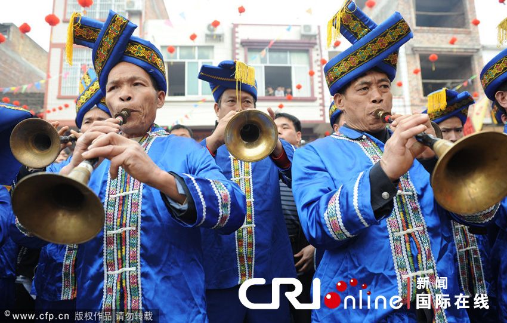

中国是一个统一的多民族国家，目前通过识别并经中央政府确认的民族共有56个。其中由于汉族以外的55个民族相对汉族人口较少，习惯上被称为“少数民族”。中国的少数民族分布广阔，各民族的形成，经历了至少两千多年的分化或融合过程，民族文化也都有着各自长期发展的历史传统，民族服饰多姿多彩，服饰文化内容格外丰富。本期为您展示的是壮族服饰与苗族服饰。
壮族是中国人口最多的少数民族，主要分布在广西、云南、广东和贵州等省区。由于壮族多地处中、南亚热带季风气候区，气候温暧，热量丰富，所以壮族服装以蓝黑色衣裙、衣裤式短装为主。
在服饰上，壮族男装多为对襟的唐装，与汉族无太大区别，以当地土布制作。壮族妇女的服饰则多姿多彩，端庄大方。她们一般的服饰是一身蓝黑，裤脚稍宽，头上包着彩色印花或提花毛巾，腰间系着精致的围裙，上衣的长短有两个流派，大多数地区是短及腰的，少数地区上衣长及膝。
壮族妇女普遍喜好戴耳环、手镯和项圈，尤其喜欢在鞋、帽、胸兜上用五色丝线绣上花纹，人物、鸟兽、花卉，色彩斑斓。她们还擅长纺织和刺绣，所织的壮布和壮锦，均以图案精美和色彩艳丽著称，还有风格别致的“蜡染”也为人们所称道。
苗族是一个古老的民族，现主要聚居于贵州省东南部、广西大苗山、海南岛及贵州、湖南、湖北、四川、云南、广西等省区的交界地带。
苗族服饰种类繁多，仅黔东南苗族服饰就不下200种，是中国、也是世界上苗族服饰种类最多、保存最好的区域，被称为“苗族服饰博物馆”。苗族服饰从总体来看，保持着中国民间的织、绣、挑、染的传统工艺技法，服饰图案花团锦簇，溢彩流光，显示出鲜明的民族艺术特色。从内容上看，服饰图案大多取材于日常生活中各种活生生的物象，有表意和识别族类、支系及语言的重要作用，这些形象记录被专家学者称为“穿在身上的史诗”。从用色上看，她们善于选用多种强烈的对比色彩，努力追求颜色的浓郁和厚重的艳丽感，一般均为红、黑、白、黄、蓝五种。从形式上看，苗族服饰分为盛装和便装。盛装，为节日礼宾和婚嫁时穿着的服装，繁复华丽，集中体现苗族服饰的艺术水平。便装，样式素静、简洁。
银饰在苗族服饰中占据重要位置，且苗族银饰以“大、重、多”为美，每逢重要节日，盛装的苗家姑娘们就用银角、银帽、银网链、银梳、银镯、银耳环、银腰带等装饰一新，异彩纷呈，美不胜收。
头包彩色印花或提花毛巾是壮族妇女服饰的一大特点

壮族男装多为对襟的唐装，与汉族无太大区别。
身着艳丽服饰的壮族少女
花团锦簇，溢彩流光的苗族服饰

苗家姑娘最爱百褶裙，一条裙子上的褶有500多个。这些裙子从纺织布到漂染缝制，一直到最后绘图绣花，都是她们自己独立完成
苗族服饰的便装式样素净、简洁
身穿盛装的苗族姑娘在贵州苗族姊妹节上展示多姿多彩的民族服饰